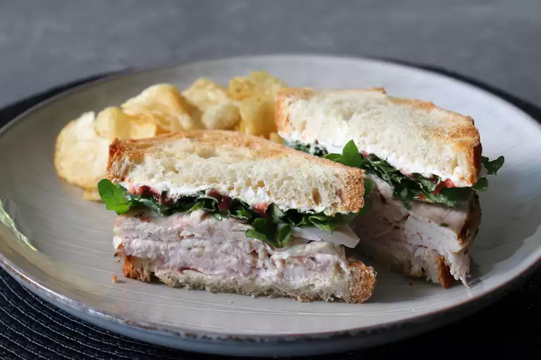

Turkey Breast sandwiches

Description
I'm excited to be sharing just how simple and easy it is to roast and slice your own turkey breast for sandwiches, which might not seem like something worth doing — until you actually do it. And no, enjoying fresh turkey sandwiches once a year after Thanksgiving is not enough.
Ingredients
- 1 (2 1/2 to 3 pound) skin-on, bone-in split turkey breast
- 1 tablespoon olive oil
For the spice rub!
- 2 ½ teaspoons kosher salt
- 1 tablespoon freshly ground black pepper
- 1 teaspoon dried thyme
- 1 teaspoon dried rosemary
- ½ teaspoon dried oregano
- 1 teaspoon smoked paprika
Steps
- Preheat the oven to 450 degrees (230 degrees C).
- Pat turkey breast with a paper towel to remove any excess liquid and place into a baking dish just big enough to fit it. Use the tip of a sharp small knife to poke the skin of the turkey breast all over. Drizzle over olive oil and use tongs to rub; flip turkey breast over a few times, or until all surfaces are coated with the oil. You can also use a brush. Set aside for 15 to 20 minutes.
- While turkey rests, mix salt, pepper, thyme, rosemary, oregano, and paprika together in a small bowl until thoroughly combined.
- Use tongs to grab the turkey breast with one hand while using your other hand to sprinkle the spice rub evenly over the entire surface, including the sides. Finish with the skin side facing up.
- Add about 1/2 inch of water to the bottom of the baking dish.
- Place prepared turkey breast into the center of the oven. Immediately lower the heat to 300 degrees F (150 degrees C). Roast until a probe thermometer stuck into center of the thickest part of the breast reads 150 degrees F (65 degrees C), about 1 hour and 15 minutes.
- Let cool before wrapping. Chill thoroughly in the refrigerator, about 8 hours, or overnight. Once meat is cold, slice thinly and serve.